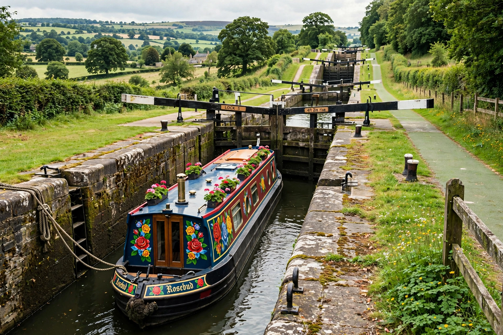

[Image placeholder: A flight of locks raising a narrowboat on a British canal]A **canal** is a human-made waterway constructed to allow boats and ships to travel from one body of water to another, or to convey water for irrigation, drainage or power. Ship canals such as the Suez (1869) and Panama (1914) canals reshaped world trade by joining oceans; navigation canals with locks — like Britain's narrow canals of the Industrial Revolution and France's Canal du Midi (1681) — climbed hills before railways displaced them.
Canal engineering centres on the lock, a chamber with gates at both ends that raises or lowers vessels between water levels, supplied by reservoirs and feeders. Irrigation canals are among humanity's oldest infrastructure, from ancient Egypt and Mesopotamia to today's vast networks in India and Pakistan, the world's largest irrigation systems. Modern megaprojects include China's Grand Canal — at about 1,776 km the longest artificial waterway ever built — and its South–North Water Transfer Project.
Mesopotamian and Egyptian canals are over 4,000 years old. China's Grand Canal was built in sections from the fifth century BC and completed under the Sui dynasty. Europe's canal age (roughly 1760–1840) fuelled industrialisation by cheaply moving coal and goods; many canals then decayed before revival as leisure boating routes.